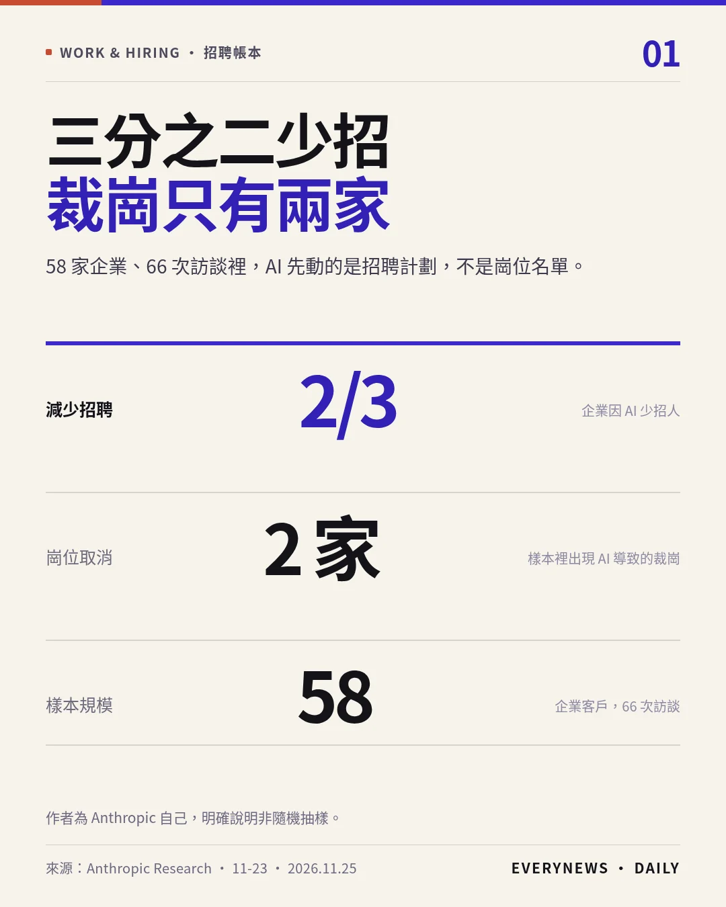
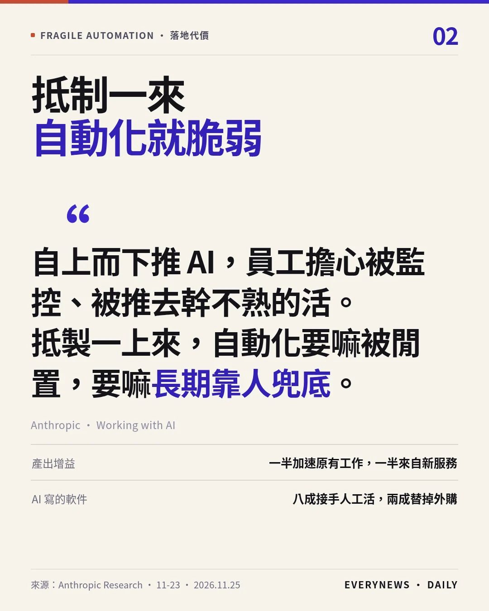

Anthropic 把 58 家企业客户的 66 次访谈摊开，最扎眼的一栏是招聘。三分之二的公司说因为 AI 少招了人，真正砍掉岗位的只有两家。自上而下推 AI 的老板容易撞上另一堵墙，员工担心技术盯着自己干活，抵制一上来，自动化要么被闲置，要么靠人反复兜底撑着。报告把这类产物叫作脆弱的自动化，看着上线了，其实没人敢把它接进关键流程。
三分之二少招人，裁掉的只有两家

檢視原圖
檢視原圖| 主体 | Anthropic，Working with AI 研究页 |
|---|---|
| 样本 | 58 家企业客户的 66 次访谈 |
| 招聘变化 | 三分之二企业因 AI 减少招聘 |
| 岗位裁撤 | 仅 2 家企业出现 AI 导致的岗位取消 |
| 失败模式 | 员工抵制令自动化被弃用或长期靠人兜底 |
| 来源 | https://www.anthropic.com/research/working-with-ai |